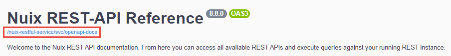
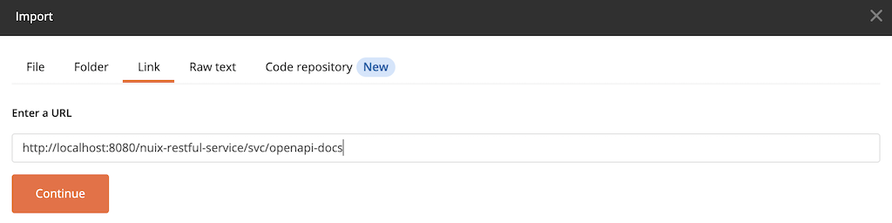
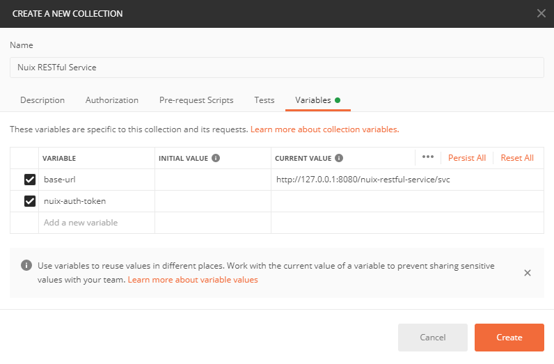
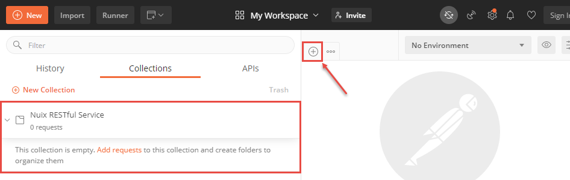
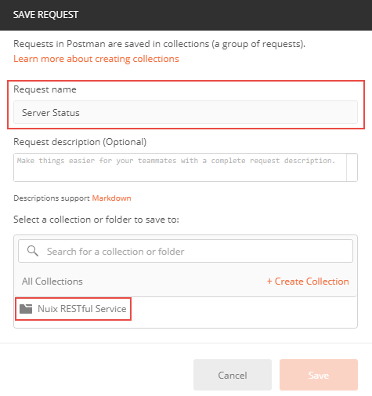

Set Up your Development Environment
Before proceeding with the steps outlined below, ensure that the following prerequisites have been completed:
- Nuix RESTful Service is installed and running.
- Access to Nuix Licensing is configured using any of the following options:
You will also need to know the following details about your installation.
- The server location of your REST installation.
- Default location:
<localhost>:8080/nuix-restful-service/svc/ - This URL is used throughout the provided examples to make calls to the API.
- Default location:
- The location of the API reference documentation.
- Default location:
<localhost>:8080/nuix-restful-service/svc/docs
- Default location:
Nuix RESTful Service is a language agnostic tool capable of interpreting calls over HTTP(s) using the method of your choice. To explore the API, any tool capable of performing HTTP requests can be used.
Postman
For the purposes of these quick start topics, simple cURL commands are provided that can be run within Postman. To use Postman, visit the following URL and download the API client for the operating system you are using.
https://www.postman.com/downloads/
Once downloaded, run the installer to setup Postman on your computer. Details about the installation process can be located on the Postman website.
https://learning.postman.com/docs/getting-started/installation-and-updates/
After the installation completes, launch the application by clicking the Postman icon on your desktop.
Import the OpenAPI Specification
The Nuix RESTful Service API documentation can be imported directly into Postman using any of the following methods. The steps outlined below are based on Postman Version 7.36.4.
Option 1: Run in Postman
To get started quickly, click the Run in Postman button below and follow the prompts to import the complete API directly into Postman with just a few clicks.

Option 2: Link Import
Use the following procedure to import the Nuix RESTful Service API into Postman using a link to the API specification:
-
Navigate to the Nuix RESTful Service reference documentation to locate a direct link to the OpenAPI specification.
Default docs location:
<localhost>:8080/nuix-restful-service/svc/docs -
Right-click the URL below the heading at the top of the page, then select Copy link address to copy the location of the
openapi-docs.jsonspecification file.
-
Within Postman, expand the File menu, and then click import.
-
From the Import window, select the Link tab. Paste the address you copied in Step 2 into the URL field, and then click Continue. 
-
Confirm the details of the import and make the following additional selections:
- Under the Link this collection as menu, select Integration Test.
- Click Show advanced settings and confirm the following selections:
| Advanced Option | Recommended Setting |
|---|---|
| Naming requests | Fallback |
| Request parameter generation | Example |
| Response parameter generation | Example |
| Folder organization | Tags |
- Click Import.
When the import is complete, a new collection named Nuix REST-API Reference will be available from the Collections tab. The available endpoints are organized according to how they are listed in the API reference documentation.
Option 3: File Import
If you do not have a running instance of Nuix RESTful Service, but have previously downloaded the specification in either openapi.yaml or openapi-docs.json format, you can upload the API documentation directly into Postman with the specification that you have saved using the following procedure.
-
Within Postman, expand the file menu, and then click Import.
-
From the File tab, click Upload Files and then locate and select a previously downloaded API documentation file. (
openapi.yamloropenapi-docs.json) -
Confirm the details of the import and make the following additional selections:
- Under the Link this collection as menu, select Integration Test.
- Click Show advanced settings and confirm the following selections:
| Advanced Option | Recommended Setting |
|---|---|
| Naming requests | Fallback |
| Request parameter generation | Example |
| Response parameter generation | Example |
| Folder organization | Tags |
- Click Import.
When the import is complete, a new collection named Nuix REST-API Reference will be available from the Collections tab. The available endpoints are organized according to how they are listed in the API reference documentation.
Advanced Postman Setup
Postman provides an interface that allows you to create and test calls to an API. Postman also allows you to configure variables for commonly used parameters that can be used to streamline your workflow when constructing API calls.
Use the following procedure to setup a few basic configurations in your Postman installation:
- With Postman open, select an existing collection or click on New Collection to create a location to save any API calls that you create for the Nuix RESTful Service.
- Provide a name for the new collection and optionally a description.
- Select the Variables tab and define the following variables based on your installation:
| Variable | Current Value |
|---|---|
base-url |
The URL of your Nuix RESTful Service installation. Default URL: http://127.0.0.1:8080/nuix-restful-service/svc |
nuix-auth-token |
The authorization token that was issued to you when a license is acquired. Note: Since a license has not yet been acquired, leave this field empty. |
Note
The variable values identified in the table map to parameters used in the Nuix RESTful Service API.- Click Create to finalize the new collection.

The newly created collection will be displayed in the left sidebar of Postman under the Collections tab. As you create and test calls to the REST API, you can save them to your newly created collection and access them from this location within Postman.
To create a new request, click the + button located at the top of the builder window.

To save a request to your Postman collection, use the following procedure:
-
Expand the Save button drop-down menu next to the URL input field and select Save As from the menu.
-
Provide a Request name, such as Server Status, for the call.
-
Select the Collection to save the request in, then click Save.
